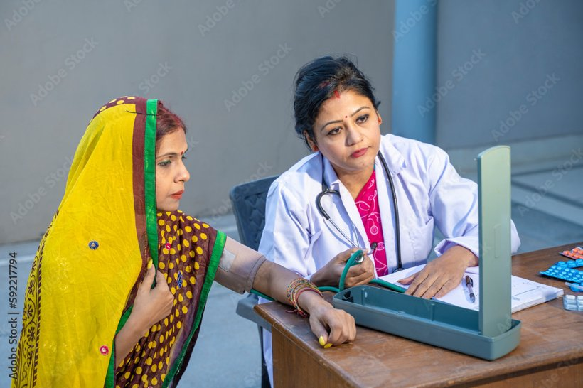
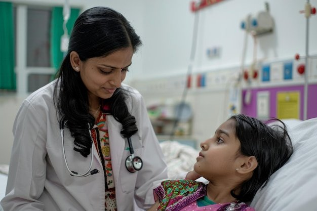
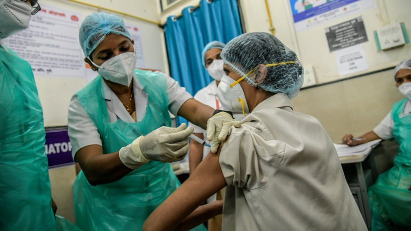
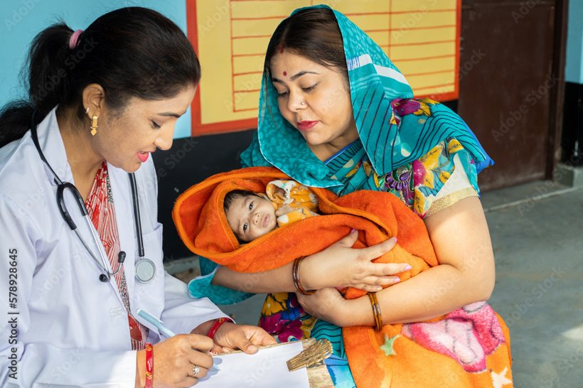
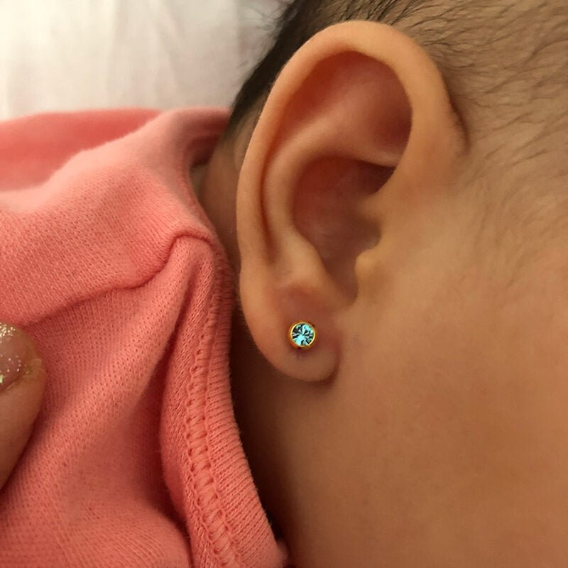

Obstetrics & Gynaecology
Antenatal care, normal and cesarean deliveries, infertility evaluation, menstrual and hormonal disorders, menopausal care, and gynaecological surgeries by Dr. Suguna Nampally.
Explore women's healthTwo trusted consultants at Prabhat Women & Children Clinic, BTM Layout come together for complete care
under one roof.
Dr. Suguna Nampally brings three decades of obstetrics and gynaecology expertise.
Dr. Shiva Devaraj cares for newborns, children, and adolescents with warmth and
clinical precision.


From your first antenatal visit to your child's school-age check-ups, every step of the journey can be followed by specialists who know your family's history.
Antenatal care, normal and cesarean deliveries, infertility evaluation, menstrual and hormonal disorders, menopausal care, and gynaecological surgeries by Dr. Suguna Nampally.
Explore women's healthNewborn and neonatal care, routine vaccinations, growth and development monitoring, pediatric infections, nutrition counselling, and adolescent health by Dr. Shiva Devaraj.
Explore pediatric careDr. Suguna Nampally has guided thousands of women through pregnancy, childbirth, and every stage of
gynaecological health since the early 1990s.
Dr. Shiva Devaraj follows evidence-based pediatric
medicine and focuses on early diagnosis, timely vaccination, and reassuring, clear guidance for parents.

Three decades of obstetrics and gynaecology practice, with a strong focus on safe normal deliveries, infertility support, and personalised women's health across every life stage.

Comprehensive pediatric care from birth through adolescence, with expertise in neonatal health, vaccinations, growth monitoring, childhood infections, and parental guidance.
Touch-friendly cards summarise the most requested obstetric, gynaecological, and pediatric services. Full details are on the services page.
Pregnancy check-ups, scan guidance, nutrition counselling, and high-risk pregnancy follow-up.
Focus on safe vaginal births with assisted delivery support when medically required.
Planned and emergency C-sections performed with admission to our partner hospital.
Recovery support for the mother and newborn follow-up during the early weeks.
Step-by-step assessment including ovulation induction and follicular monitoring.
Lifestyle-led, medication-supported care for polycystic ovary syndrome and metabolic issues.

Evaluation and treatment of irregular, heavy, or painful periods and amenorrhea.
Medical management and surgical options including myomectomy and cyst removal.
Support through hot flashes, sleep disturbances, osteoporosis risk, and hormone therapy guidance.
Gentle care for young girls navigating puberty, periods, and hormonal changes.

Pap smear, cervical cancer screening, and management of abnormal findings.
Routine preventive screenings, breast awareness, and long-term wellness planning.
Newborn examination, preterm follow-up, and neonatal jaundice review.
IAP schedule vaccines, optional vaccines, and travel immunisation advice.

Evaluation and treatment of common childhood infections, dengue, typhoid, and viral illnesses.
Childhood asthma, wheezing, recurrent cough, and allergic rhinitis management.
Diarrhea, dehydration, constipation, abdominal pain, and feeding difficulties.
Counselling for new mothers on feeding, latch, and infant nutrition.
Lifestyle guidance, obesity prevention, and adolescent health counselling.

Screen-time guidance, sleep issues, and everyday behavioural questions for parents.
Counselling and preventive care for teenagers, including HPV and hepatitis B vaccines.
Safe, hygienic ear piercing for children using sterile, painless techniques.

Mother and child, cared for together — with experience, warmth, and steady follow-up.
The practice is built on clear communication, respectful listening, and a calm clinical environment where families feel comfortable asking every question.

Careful history, examination, scans, and counselling for every antenatal visit, menstrual concern, or infertility work-up.
Normal and cesarean deliveries at the clinic and partner hospital, with immediate newborn examination by the pediatrician.
Vaccinations, growth monitoring, and support for every childhood illness or development concern over the years ahead.